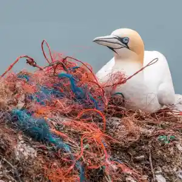
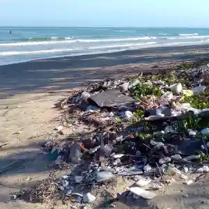

Sea of Hope
Ocean Pollution Awareness
Toghether, we can turn the tide on ocean pollution and create a brighter, cleaner future for our seas and communities, but we need your help. Join us in our mission to raise awareness and take action against ocean pollution. Every effort counts, and together, we can make a significant impact. Let's protect our oceans for future generations.

What We Do?
Cleaning Ocean program
Thriving Communities
Healthy Marine Life
Sea of Hope works to raise awareness about ocean pollution and promote sustainable practices in coastal communities. We organize beach cleanups, educational workshops, and community engagement programs to protect marine ecosystems.


Why we do this?
We do this because ocean pollution threatens marine life and coastal communities. Our mission is to raise awareness, promote sustainable practices, and take action to protect our oceans for future generations.

Join Us
By reducing ocean pollution, we can create cleaner oceans, healthier marine life, and thriving coastal communities. Join us in our mission to protect our oceans and ensure a sustainable future for all.
Get Involved